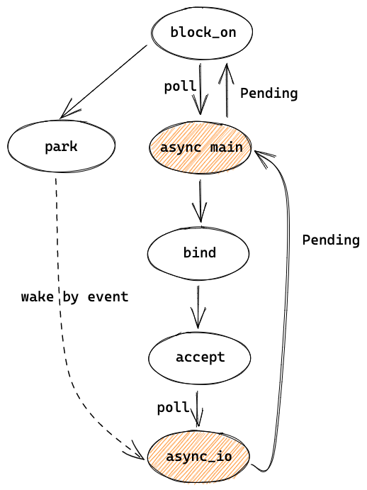

主线程 - 整体逻辑和等待连接
上一章的 Runtime 包含了 worker 线程的 scheduler、runtime handle 和 blocking 线程池，从 Builder 返回后，会继续执行 block_on。
主线程 loop
#![allow(unused)] fn main() { pub(crate) fn block_on<F: Future>(&mut self, f: F) -> Result<> { let waker = self.get_unpark()?.into_waker(); let mut cx = Context::from_waker(&waker); pin!(f); loop { if let Ready(v) = f.as_mut().poll(&mut cx) { return Ok(v); } self.park()?; } } fn park(&self) { m = self.condvar.wait(m).unwrap(); } fn unpark(&self) { self.condvar.notify_one() } }
这里其实就是 1.2 图中主线程的执行流程，在循环中先通过 poll 执行 async main（f），如果执行完（Ready）就返回，表示 block_on 执行结束，主线程也结束并退出程序了，否则就通过 park等待信号量。
这里的 f 就是 1.1 讲的 future tree 的 root ，它的子 futures 都可以拿到这里创建的 Context。因为 poll 之前，已经把 unpark 转成了 waker，并放进 Context 中，所以当要唤醒 future 时，unpark 就会被调用，也就是通过信号量来唤醒 park 的主线程。f 在 echo 中是 async main，也就是主线程的主要逻辑：
#![allow(unused)] fn main() { let listener = TcpListener::bind(&addr).await?; loop { let (mut socket, _) = listener.accept().await?; tokio::spawn(async move { // ... }); } }
TcpListener bind
先来看 bind 和内部调用的其他函数：
#![allow(unused)] fn main() { pub async fn bind<A: ToSocketAddrs>(addr: A) -> io::Result<TcpListener> { let addrs = to_socket_addrs(addr).await?; for addr in addrs { match TcpListener::bind_addr(addr) { Ok(listener) => return Ok(listener), // ... } } } --------------------------- fn bind_addr(addr: SocketAddr) -> io::Result<TcpListener> { let listener = mio::net::TcpListener::bind(addr)?; TcpListener::new(listener) } --------------------------- // TcpListener::new -> PollEvented::new(listener): // https://github.com/tokio-rs/tokio/blob/a5ee2f0d3d78daa01e2c6c12d22b82474dc5c32a/tokio/src/net/tcp/listener.rs#L265 interest = Interest::READABLE | Interest::WRITABLE; handle = Handle::current()); // by clone let shared = if let Some(inner) = handle.inner() { inner.add_source(listener, interest)? } return TcpListener { io: PollEvented { io: listener, registration: Registration { handle: handle, shared: shared } } } ------------------------ // add_source: // https://github.com/tokio-rs/tokio/blob/dcac336dc7206adb44c90bcfcb62cd11755a0ba1/tokio/src/io/driver/mod.rs#L320 let (address, shared) = self.io_dispatch.allocate(); let token = GENERATION.pack(shared.generation(), ADDRESS.pack(address.as_usize(), 0)); self.registry .register(source, mio::Token(token), interest.to_mio())?; Ok(shared) }
to_socket_addrs 只是解析 server 地址，之所以这里加了 await ，是因为可能涉及到 DNS 解析，所以需要是异步的。
bind_addr 先调用了 mio 的 bind ，等同于 socket 的 bind+listen，返回的 mio TcpListener 会用来初始化 Tokio 的 TcpListener。
TcpListener::new 初始化 TcpListener 需要向 event poll 注册。这里先通过 clone 得到了之前 runtime handle 的 io_handle，然后用这个 io_handle 的 io_dispatch （slab.allocator) 来分配一个 ScheduledIo 类型的 slot，就得到了一个 address 和对应的 ScheduledIO shared，并生成了一个 token，然后用这个 token 来注册 event poll 来获取可读和可写事件。向 mio 注册完之后，就会返回之前申请的 ScheduledIO，它会被存放在 TcpListener 中，等收到 events 时需要用到。这个 token 的设计会在 3.1 描述。
listener 创建完后就开始在 loop 中 accept，是常见的 TCP server 的逻辑。
TcpListener accept
#![allow(unused)] fn main() { // listener.accept(): let (mio, addr) = self.io.registration() .async_io(Interest::READABLE, || self.io.accept()) .await?; }
accept 里调用了一个异步的函数 async_io 以及它的 await。我们来看 async_io ，先只看等待连接建立这部分：
#![allow(unused)] fn main() { // async fn async_io: loop { let event = self.readiness(interest).await?; // ... after listener is ready to accept } ------------------------------ // self.readiness(interest): Readiness { scheduled_io: self, state: State::Init, waiter: UnsafeCell::new(Waiter { interest, ... }), } }
readiness(interest) 返回的是一个 Readiness struct，调用它的 .await? 时，Rust 会生成状态机代码，并调用 Readiness 实现的 Future trait 的 poll 方法。它的 poll 有点复杂，简化后如下：
#![allow(unused)] fn main() { loop { match *state { State::Init => { let curr = self.scheduled_io.readiness.load(SeqCst); let mut ready = Ready::from_usize(READINESS.unpack(curr)); let ready = ready.intersection(interest); if !ready.is_empty() { // Currently ready! ... return Pool::Ready(...); } // Not ready (*waiter.get()).waker = Some(cx.waker().clone()); waiters.list.push_front(unsafe { NonNull::new_unchecked(waiter.get()) }); *state = State::Waiting; } State::Waiting => { let w = unsafe { &mut *waiter.get() }; if w.is_ready { *state = State::Done; } else { // Update the waker, if necessary. if !w.waker.as_ref().unwrap().will_wake(cx.waker()) { w.waker = Some(cx.waker().clone()); } return Poll::Pending; } } } } }
Readiness 的初始状态为 Init，于是这里会先判断是不是 ready，一般刚创建时还没有 ready，于是把 waker 设置为 Context 中的 waker，Context 就是在本章开头 block_on 调用中被传入 root future 的。其中， scheduled_io.readiness 表示某个 token 是否 ready。（在 3.1 会讲 readiness 数据结构）
然后改变状态为 Waiting，并返回 Poll::Pending。Pending 会一直向上返回到 async_io，再到 listener.accept，最终到这一章第一段代码：
#![allow(unused)] fn main() { loop { if let Ready(v) = f.as_mut().poll(&mut cx) { // poll returns Pending return Ok(v); } self.park()?; } }
因为 f.as_mut().poll 返回了 Pending，于是这里就往后执行 park()，也就是之前看过的 self.condvar.wait，于是主线程就进入了休眠，等待被 reactor 唤醒。
总结
可以简单用下图来总结目前的代码，主线程先 poll async main，然后在其中执行 bind 和 accept，bind 中会向 event loop 注册，accept 会 poll async_io，这时返回了 Pending，并向上经过 async main 返回到了 block_on 中，block_on 于是开始 park。
之后会被 event 唤醒，并回到 async_io 的地方继续执行代码，让我们在后边的章节中讲。
 link